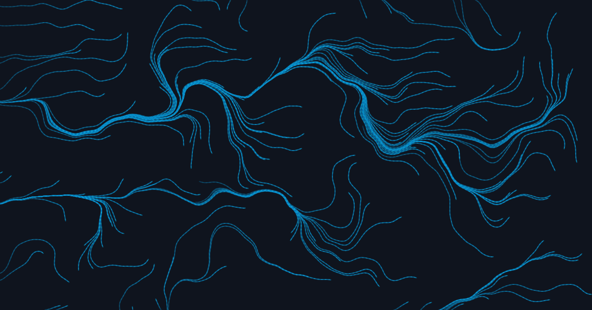

02 · Apr 2, 2026
What is ethics?
And why do most conversations about it collapse before they begin?
The Human Signal
A reflective, unhurried publication about working with — and being worked on by — language models.
01 · Mar 12, 2026
The site you're reading is the lab notebook for its own construction.
02 · Apr 2, 2026
And why do most conversations about it collapse before they begin?

03 · Feb 28, 2026
Naming a lab is naming the work you expect to do there.

04 · Jan 18, 2026
An Ethical LLM Language Assistant. Or an attempt at one.
From the lab
Ethics is what you owe the people affected by your choices when you can't see them.— from "What is ethics?"
What this is
Less a website than a thought experiment that got out of hand — a sketch lab for thinking about how AI affects the people who live with it.
Who it's for